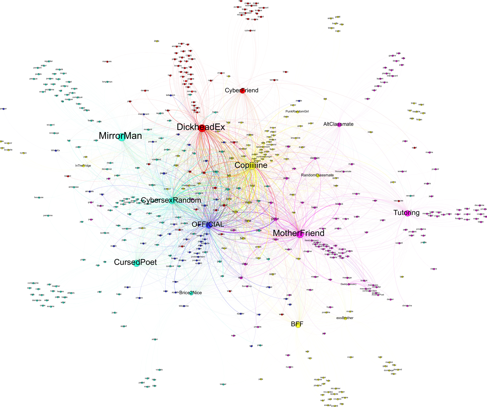

Résultats de l'étude Accueil
Contexte de l'étude
Les histoires d'amour finissent mal, en général
Même s'il ne pensait pas nécessairement appliquer ses maximes au cadre d'une relation interpersonnelle, Douglas Adams avait coutume de dire que lorsque vous êtes proche de la fin, il convient de remercier le Ciel pour tous les bons moments dont Il vous a fait grâce. Et si vous n'avez pas eu la chance d'en être pourvu, alors remerciez le Ciel de mettre fin à votre misérable parcours.
Pourtant il existe une troisième voie, tristement la plus commune, la voie d'une relation florissante qui prend fin dans le chaos le plus total avant que vous ne puissiez réaliser ce qui vous arrive. Et là, entre deux sanglots, le cœur lourd et la pupille dilatée, vous essayez désespérément de comprendre comment vous avez pu, vous de coutume si sérieux, en arriver à devenir cette loque méprisable tout droit sortie d'une comédie romantique de bas de gamme, et dont vous preniez tant de plaisir à vous gausser.
Et là, il y a autant de manières de réagir qu'il y a de races de malheur.
L'auteur de ce billet aurait pu se morfondre devant Bridget Jones et se gaver de glace, faire la tournée des bars pour venger dans l'anonymat de coups d'un soir sa fierté malade, ou encore noyer dans le travail aveugle la conscience de sa douleur.
Mais l'auteur de ce post est amateur de belle logique, et quelque chose dans sa dramatique expérience semblait trop brusque. L'auteur de ce post a donc pris le parti de comprendre. Et s'en est donné les moyens.
M'Isengard.
Il est évident que le jeu de données sur lequel se base cette étude est issu de la seule imagination de ses auteurs. Toute ressemblance avec des personnages existants serait bien infortunée, et particulièrement pour eux.
Du reste, les hypothèses levées et les conclusions tirées n'engagent que l'auteur de ce post au titre de spéculations et en tant que telles.
L'intérêt princpal de cet article réside en la démarche suivie et les raisonnements établis pour atteindre ses conclusions.
Des marches du "pour voir"
Imaginons un instant que l'infortunée victime d'une infidèle moitié mette, par un fortuit hasard, la main sur l'intégralité des messages échangés par celle-ci sur une période d'un an. Il va sans dire que le volume du jeu de données ainsi constitué n'en permettrait pas une lecture intégrale, et d'autant moins une lecture intelligente. Notre victime pourrait, certes, cibler les zones sensibles, mais cela en suppose une connaissance, ou au moins une intuition, préalable.
Mais il ne faut pas oublier que l'auteur de ce post est un amateur de logique en tout genre. Il a donc pris le parti, et c'est là tout son génie, d'effectuer une analyse systématique desdites données afin d'en comprendre la structure et d'identifier les zones à risque. Pourtant, cette étude a fini par aller beaucoup plus loin que ça.
Visualisation
Détails
Choisissez un acteur à observer. Vous pouvez comparer plusieurs
acteurs en cliquant sur l'icône "+".
Sélectionnez ensuite des
modalité d'observation (jour de la semaine, jour du mois, etc.) et
cliquez sur "Rechercher".
{{ actor.name }}

for the time they took to make this possible.